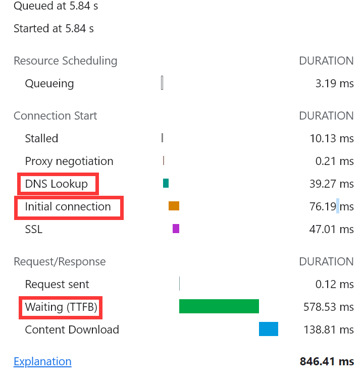

# 前言
春招八股基本上都靠背的，许多面试官提到我的一个通病就是项目经验少 + 知识点深度不够。
故本文主要是针对自我的知识薄弱点进行总结。
# 1. 前端常见的的性能优化有哪些？
遇到问题首先要知道问题是什么我们才能做好问题的解决，同样，性能优化也是如此，我们要知道是哪些层面的执行速度效率过低，才导致我们的页面看起来特别 "慢"。
# 性能分析方法：
- 查看 NetWork 面板中的 WaterFall，看其宽度和长度是否过大，进一步分析如下指标：

- 查看 performance 中的 Timings 中的 LCP/FCP 是否过长，以及饼状图中的各个占比来定位性能缺陷。
- 采用
PerformanceNavigationTiming接口
- 采用
- 排查包中的一些无用模块
- 采用
webpack-bundle-analyzer包分析工具
- 采用
# 优化手段：
Tree Shaking (基于 ESM 来摇掉无用的代码)
使用方法：在 webpack 的产出结果 bundle 包中，调用 isEmpty 方法，减少我们包的大小
import _isEmpty from 'lodash/isEmpty';
注：在 webpack4.x 中默认对 tree-shaking 进行了支持。 在 webpack2.x 中使用 tree-shaking；
split chunks（分包）
webpack4.x 已执行只能代码分包
按需加载（多到麻脑壳...）
gzip
服务端配置 gzip 压缩后可以大大缩减资源大小
eg:
nginx中进行配置http {gzip on;
gzip_buffers 32 4K;
gzip_comp_level 6;
gzip_min_length 100;
gzip_types application/javascript text/css text/xml;
gzip_disable "MSIE [1-6]\.";
gzip_vary on;
}作者：黑色的枫
链接：https://juejin.cn/post/6904517485349830670
来源：稀土掘金
著作权归作者所有。商业转载请联系作者获得授权，非商业转载请注明出处。
图片压缩
图片分割
sprite 雪碧图
- 小图片合并为一张大的图片，然后通过 background 分割到需要展示的图片
CDN
懒加载